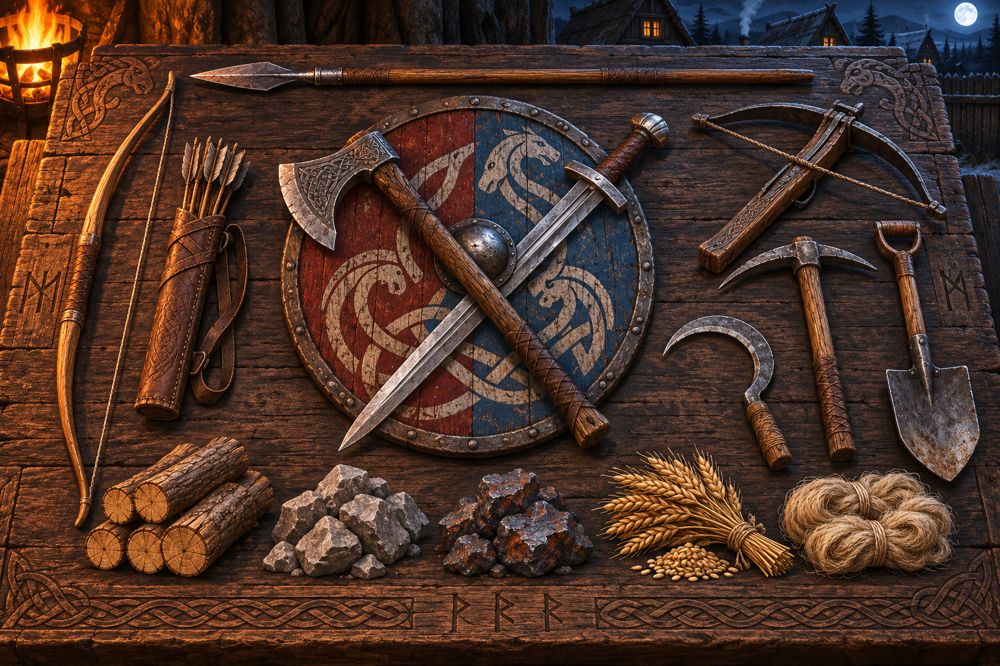

O começo
Um simulador de vila medieval
Da primeira fogueira
ao reino que ficará na história.
Cinco sobreviventes. Poucos recursos. Um mundo vivo. Construa, plante, forme famílias e lidere seu povo contra aquilo que espreita além das muralhas.
05 colonos iniciais
04 estações vivas
∞ histórias possíveis
A saga começa pequena
Você não recebe um reino.
Você o constrói.
Em Synir Þrumu, cada tronco cortado e cada campo arado empurram a colônia para a próxima era. O mapa não é apenas cenário: ele alimenta, ameaça e transforma o seu povo.
A fundação
Vilarejo
Casas, ofícios, estradas e famílias.O legado
Cidade
Produção avançada, muralhas e exército.Tempo & sobrevivência
O mundo não espera.
Dia e noite mudam a rotina. A cada três dias chega uma nova estação. Plante na primavera, prepare-se para colher no outono e veja os aldeões voltarem para casa quando o céu escurece.
Pessoas, não peças
Cada vida carrega uma história.
Nomes, antigas profissões, traços, fome, cansaço e família. Os adultos criam laços, as crianças herdam ofícios e o crescimento da população exige novas moradias.
Produção conectada
Nada surge do vazio.
Madeira vira ferramenta. Trigo passa pelo moinho e pela padaria. Depósitos separados mantêm alimentos e materiais organizados enquanto a vila ganha escala.
Arquivo do Jarl
Wiki do jogo
Colônia
Aldeões e famílias
Cada personagem possui nome, profissão anterior e aptidões. O jogador escolhe quem coleta madeira, ara o campo, constrói estradas ou assume um ofício.
- Barraca: abriga uma pessoa e não forma família.
- Casa: abriga dois adultos e até três crianças.
- A fome aumenta conforme o esforço do dia.
- Filhos crescem, herdam profissões e depois precisam de casa.
Mundo vivo
Tempo e estações
O calendário organiza trabalho, descanso e cultivo. A luz muda gradualmente e o anoitecer chama os aldeões de volta para comer e dormir.
PrimaveraplantioVerãocrescimentoOutonocolheitaInvernopreparo
Agricultura
Da terra para a mesa
O campo passa por etapas reais e exige tempo de trabalho. As culturas alimentam pessoas, animais e cadeias de produção inteiras.
01 Arar→02 Semear→03 Regar→04 Crescer→05 Colher
TrigoTrigo → Moinho → Farinha → Padaria → Pão
MilhoCru para galinhas • Moído para vacas, ovelhas e porcos
CapimAlimento direto para rebanhos
Natureza
Recursos do mapa
Florestas, rochas, minérios e rios definem onde a vila pode prosperar. Árvores comuns rendem troncos e galhos; frutíferas permitem colher ou derrubar.
- Árvore comum: 1–2 troncos e 1–3 galhos.
- Cada árvore pode soltar no máximo uma muda do próprio tipo.
- Água possui margens, pedras, profundidade e movimento visual.
Pecuária
Animais e dietas
Rebanhos agem como criaturas vivas: caminham, pastam, descansam e atravessam o mapa em pequenos grupos.
Porcos frutas, milho moído ou capimVacas e ovelhas capim ou milho moídoGalinhas somente milho cru
Construção
Vila e logística
Estradas aceleram deslocamentos e depósitos sustentam o crescimento. Alimentos ficam separados de madeira, pedra, minério e ferramentas.
- Depósitos possuem versões aprimoradas e maior capacidade.
- Ruas de terra e pedra se conectam de forma orgânica.
- Cercas se alinham automaticamente por direção.
Guerra
Comando tático em tempo real
Selecione várias unidades com o mouse, filtre por função e dê ordens diretamente no campo de batalha. A preparação e a formação certa importam tanto quanto o equipamento.
Linha de frente Em linha • Em V • Parede de escudos • Agrupar • EspalharArtilharia Linha de tiro • Espalhar • Agrupar • Correr • RecuarSeleção rápida Somente guerreiros • arqueiros • besteiros • todos
Nenhum capítulo corresponde à sua busca.
O aço decide o que a muralha não conteve
Dê ordens.
Mantenha a linha.
Goblins se movem, atacam e defendem seus assentamentos. Seus guerreiros respondem em tempo real: forme uma parede de escudos, proteja os arqueiros, avance em V ou recue antes que a linha se rompa.
01 Selecione02 Forme03 Comande
Arsenal do construtor
Feito à mão.
Forjado para sobreviver.

Da primeira pá à última espada.
Ferramentas iniciam a colônia. Armas e escudos mantêm vivo tudo o que ela construiu.
Perguntas do assentamento
Antes de acender a fogueira
Qual é o objetivo principal do jogo?+
Começar com cinco pessoas em um pequeno acampamento e transformar o local em um vilarejo, uma cidade e, por fim, um assentamento capaz de sobreviver às estações e aos inimigos.
Posso escolher quem executa cada trabalho?+
Sim. Os aldeões podem ser selecionados individualmente ou em grupo para coletar recursos, construir, abrir estradas, arar campos e assumir ofícios.
Como funciona o combate?+
O comando é em tempo real, com seleção por marcação, filtros por tipo de unidade e formações rápidas para linha de frente e tropas de longo alcance.
O jogo já está finalizado?+
Synir Þrumu está em desenvolvimento ativo. Sistemas, arte, desempenho e equilíbrio continuam sendo refinados a cada nova versão.
Uma vila. Um povo. Uma saga.